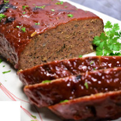

"This attractive meatloaf is a very easy, no fail main dish. It won't take long to make and
it's quite good!"
Ingredients:
11/2 pounds ground beef
1 egg
1 onion, chopped
1 cup dried bread crumbs
salt and pepper to taste
2 tablespoons brown sugar
2 tablespoons prepared mustard
1/3 cup ketchup
Directions:
Preheat oven to 350 degrees F (175 degrees C).
In a large bowl, combine the beef, egg, onion, milk and bread OR cracker crumbs. Season with salt and
pepper to taste and place in a lightly greased 9x5-inch loaf pan, or form into a loaf and place in a lightly
greased 9x13-inch baking dish.
In a separate small bowl, combine the brown sugar, mustard and ketchup. Mix well and pour over the
meatloaf.